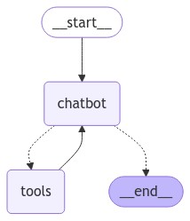

人工干预
Table of Contents
代理可能不可靠，可能需要人工输入才能成功完成任务 同样，对于某些操作，可能需要在运行前要求人工批准，以确保一切按预期运行
LangGraph 的 持久化 层支持 人工在环 工作流，允许根据用户反馈暂停和恢复执行。此功能的主要接口是 interrupt 函数。在节点内部调用 interrupt 将暂停执行
- 可以通过传入一个 Command 对象来恢复执行，并伴随来自人工的新输入
interrupt 在人体工程学上类似于 Python 的内置 input() 函数
添加 human_assistance 工具
为聊天机器人添加 human_assistance 工具。此工具使用 interrupt 来接收来自人工的信息
from typing import Annotated from langchain_tavily import TavilySearch from langchain_core.tools import tool from typing_extensions import TypedDict from langgraph.checkpoint.memory import MemorySaver from langgraph.graph import StateGraph, START, END from langgraph.graph.message import add_messages from langgraph.prebuilt import ToolNode, tools_condition from langgraph.types import Command, interrupt class State(TypedDict): messages: Annotated[list, add_messages] graph_builder = StateGraph(State) @tool def human_assistance(query: str) -> str: """Request assistance from a human.""" human_response = interrupt({"query": query}) return human_response["data"] tool = TavilySearch(max_results=2) tools = [tool, human_assistance] llm_with_tools = llm.bind_tools(tools) def chatbot(state: State): message = llm_with_tools.invoke(state["messages"]) # Because we will be interrupting during tool execution, # we disable parallel tool calling to avoid repeating any # tool invocations when we resume. assert len(message.tool_calls) <= 1 return {"messages": [message]} graph_builder.add_node("chatbot", chatbot) tool_node = ToolNode(tools=tools) graph_builder.add_node("tools", tool_node) graph_builder.add_conditional_edges( "chatbot", tools_condition, ) graph_builder.add_edge("tools", "chatbot") graph_builder.add_edge(START, "chatbot")
将 额外的 human_assistance 工具集成到 StateGraph 中
编译图
memory = MemorySaver() graph = graph_builder.compile(checkpointer=memory)
可视化图
可视化图后，会得到与之前相同的布局，只是多了一个工具！
from IPython.display import Image, display try: display(Image(graph.get_graph().draw_mermaid_png())) except Exception: # This requires some extra dependencies and is optional pass

提示聊天机器人
现在，向聊天机器人提问一个将使用新的 human_assistance 工具的问题
user_input = "I need some expert guidance for building an AI agent. Could you request assistance for me?" config = {"configurable": {"thread_id": "1"}} events = graph.stream( {"messages": [{"role": "user", "content": user_input}]}, config, stream_mode="values", ) for event in events: if "messages" in event: event["messages"][-1].pretty_print()
================================ Human Message =================================
I need some expert guidance for building an AI agent. Could you request assistance for me?
================================== Ai Message ==================================
[{'text': "Certainly! I'd be happy to request expert assistance for you regarding building an AI agent. To do this, I'll use the human_assistance function to relay your request. Let me do that for you now.", 'type': 'text'}, {'id': 'toolu_01ABUqneqnuHNuo1vhfDFQCW', 'input': {'query': 'A user is requesting expert guidance for building an AI agent. Could you please provide some expert advice or resources on this topic?'}, 'name': 'human_assistance', 'type': 'tool_use'}]
Tool Calls:
human_assistance (toolu_01ABUqneqnuHNuo1vhfDFQCW)
Call ID: toolu_01ABUqneqnuHNuo1vhfDFQCW
Args:
query: A user is requesting expert guidance for building an AI agent. Could you please provide some expert advice or resources on this topic?
聊天机器人生成了一个工具调用，但随后执行被中断。如果检查图状态，会看到它停止在工具节点
snapshot = graph.get_state(config) snapshot.next
('tools',)
仔细查看 human_assistance 工具
@tool def human_assistance(query: str) -> str: """Request assistance from a human.""" human_response = interrupt({"query": query}) return human_response["data"]
与 Python 的内置 input() 函数类似，在工具内部调用 interrupt 将暂停执行。进度会根据 检查点器 进行持久化；因此，如果使用 Postgres 进行持久化，只要数据库处于活动状态，它就可以随时恢复
在此示例中，它使用内存检查点器进行持久化，并且只要 Python 内核正在运行，就可以随时恢复
恢复执行
要恢复执行，请传入一个包含工具所需数据的 Command 对象。此数据的格式可以根据需要进行定制。在此示例中，使用一个带有键 "data" 的字典
human_response = ( "We, the experts are here to help! We'd recommend you check out LangGraph to build your agent." " It's much more reliable and extensible than simple autonomous agents." ) human_command = Command(resume={"data": human_response}) events = graph.stream(human_command, config, stream_mode="values") for event in events: if "messages" in event: event["messages"][-1].pretty_print()
================================== Ai Message ==================================
[{'text': "Certainly! I'd be happy to request expert assistance for you regarding building an AI agent. To do this, I'll use the human_assistance function to relay your request. Let me do that for you now.", 'type': 'text'}, {'id': 'toolu_01ABUqneqnuHNuo1vhfDFQCW', 'input': {'query': 'A user is requesting expert guidance for building an AI agent. Could you please provide some expert advice or resources on this topic?'}, 'name': 'human_assistance', 'type': 'tool_use'}]
Tool Calls:
human_assistance (toolu_01ABUqneqnuHNuo1vhfDFQCW)
Call ID: toolu_01ABUqneqnuHNuo1vhfDFQCW
Args:
query: A user is requesting expert guidance for building an AI agent. Could you please provide some expert advice or resources on this topic?
================================= Tool Message =================================
Name: human_assistance
We, the experts are here to help! We'd recommend you check out LangGraph to build your agent. It's much more reliable and extensible than simple autonomous agents.
================================== Ai Message ==================================
Thank you for your patience. I've received some expert advice regarding your request for guidance on building an AI agent. Here's what the experts have suggested:
The experts recommend that you look into LangGraph for building your AI agent. They mention that LangGraph is a more reliable and extensible option compared to simple autonomous agents.
LangGraph is likely a framework or library designed specifically for creating AI agents with advanced capabilities. Here are a few points to consider based on this recommendation:
1. Reliability: The experts emphasize that LangGraph is more reliable than simpler autonomous agent approaches. This could mean it has better stability, error handling, or consistent performance.
2. Extensibility: LangGraph is described as more extensible, which suggests that it probably offers a flexible architecture that allows you to easily add new features or modify existing ones as your agent's requirements evolve.
3. Advanced capabilities: Given that it's recommended over "simple autonomous agents," LangGraph likely provides more sophisticated tools and techniques for building complex AI agents.
...
2. Look for tutorials or guides specifically focused on building AI agents with LangGraph.
3. Check if there are any community forums or discussion groups where you can ask questions and get support from other developers using LangGraph.
If you'd like more specific information about LangGraph or have any questions about this recommendation, please feel free to ask, and I can request further assistance from the experts.
Output is truncated. View as a scrollable element or open in a text editor. Adjust cell output settings...
输入已作为工具消息接收和处理。完整代码如下：
from typing import Annotated from langchain_tavily import TavilySearch from langchain_core.tools import tool from typing_extensions import TypedDict from langgraph.checkpoint.memory import MemorySaver from langgraph.graph import StateGraph, START, END from langgraph.graph.message import add_messages from langgraph.prebuilt import ToolNode, tools_condition from langgraph.types import Command, interrupt class State(TypedDict): messages: Annotated[list, add_messages] graph_builder = StateGraph(State) @tool def human_assistance(query: str) -> str: """Request assistance from a human.""" human_response = interrupt({"query": query}) return human_response["data"] tool = TavilySearch(max_results=2) tools = [tool, human_assistance] llm_with_tools = llm.bind_tools(tools) def chatbot(state: State): message = llm_with_tools.invoke(state["messages"]) assert(len(message.tool_calls) <= 1) return {"messages": [message]} graph_builder.add_node("chatbot", chatbot) tool_node = ToolNode(tools=tools) graph_builder.add_node("tools", tool_node) graph_builder.add_conditional_edges( "chatbot", tools_condition, ) graph_builder.add_edge("tools", "chatbot") graph_builder.add_edge(START, "chatbot") memory = MemorySaver() graph = graph_builder.compile(checkpointer=memory)
至今为止教程示例都依赖于一个只包含一个条目的简单状态：消息列表 这种简单状态可以完成很多工作，但如果想在不依赖消息列表的情况下定义复杂行为，可以向状态添加其他字段
| Next：自定义状态 | Previous：添加记忆 | Home: 基础知识 |